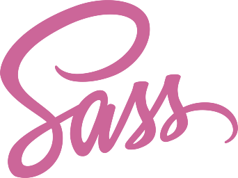
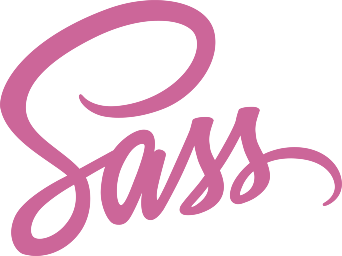

Q. 첫 직장과 직업군이 다른데 프론트엔드 개발을 하겠다고
마음을 갖게 된 이유가 있나요?
A.첫 직장을 퇴사 한 후 2~3달 정도 BackEnd SI 회사에서
인턴을 하게 되었는데 비록 Front단 작업은 많지 않았지만
Front단 작업을 할 때 BackEnd단 작업을 할 때보다 재미와
흥미를 느끼되어서
좀 더 깊이있게 배우고 싶어서 프론트 엔드 개발을 해야겠다고 마음을
갖게 되었습니다
Q. FrontEnd 개발자가 되기위해 어떤 노력을 하고 있나요?
A. 기본적으로 HTML이나 CSS 공부를 하고 있고
아무래도 React에 대해 아직 부족함이 많아 현재는 React 공부에 집중하고 있습니다.
유튜브나 강의들을 찾아가면서 Hook이나 Babel등을 공부 하고 있습니다.
마지막으로 디자인 적인 공부를 하고 있습니다. 프로젝트를 진행 하면서 디자인 적으로 부족함을 많이 느껴 공부를 하고 있습니다.
Q. FrontEnd 개발 공부 할때 어려운점이 있었다면 무엇이
있었나요?
A.어려웠던 점은 많이 있었지만 제일 어려웠던점은 CSS 작업이였습니다 아무래도 CSS 작업 시 디자인 측면에서도 잘 만들어야 한다고 생각을 하기 때문에 디자인 적으로 생각을 하는게 어려웠고
position 주는 것이 어려웠습니다
Q. 그 어려움들을 어떤식으로 해결 했나요?
A. 첫 번째 방법으로는 다른 분들이 만드신 사이트나 완성된 사이트를 보면서 이런식으로 디자인 했구나 라는걸 보고 참고하여 사이트 만들기 연습을 하였습니다
두 번째 방법으로는 잘 만들어진 홈페이지나 내가 생각 할 때 이쁜 사이트를 하나 정해 클론 코딩을 해보았습니다.

 
